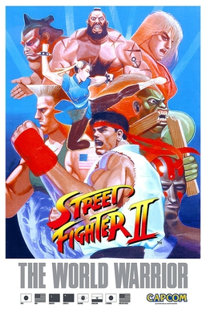
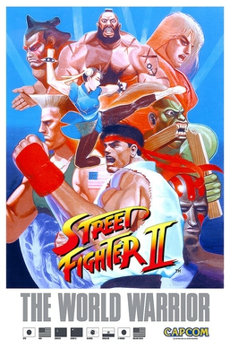

Początki zaczynaja się w latach 50 gdy informatycy tworzą pierwsze proste gry i symulacje.Następnie powstaje kilka gier najpolularniejsza z nich jest w tym czasie dwu osobowa gra
Spacewar.1970 zostaje wydana pierwsza konsola oraz pierwsze gry arcade są to złote czasy
Ponga który jest pierwszą grą komercyjną osiągająca sukces.Dwa lata później odbywa się najwcześniejszy znany nam esportowy turniej w Stanford University.
1974
Sega organizuje w Japoni około 300 turniejów arcadowych a następnie mistrzostwa w Tokio które mają zwiększyć liczbę graczy w Japoni oraz rozpromoać ich produkty głównymi nagrodami są m.in. telewizory kolorowe i czarno-białe, magnetofony kasetowe i radia tranzystorowe.Wraz z rozwijającą się technologią oraz rosnącym hypem gier oraz esportu
Atari w 1980 organizuje pierwszy międzynarodowy turniej esportowy z liczbą uczestników przekraczającą ponad 10000.
Następnie powstaje organizacja
Twin Galaxies przechwywująca rekordy arcadowe oraz organizująca turnieje w których uczestnicy mogli pobijać rekordy Guinnessa.Poza ustaleniem konkurencyjnego charakteru gier, tego typu wydarzenia promocyjne ukształtowały charakter marketingu i promocji, które stały się podstawą współczesnego e-sportu
Aby wyłonić najlepszego gracza gry wideo najczęściej opierały się na najwyższych wynikach,lecz to miało szybko się zmienić.W 1991 wychodzi
Street Fighter II który polegał na rozszczygnięciu najlepszego poprzez pojedynek dwóch graczy co w późniejszym czasie doprowadziło do gier wieloosobowych ale o tym później, narazie dalej jesteśmy w latach 90 powstaje wtedy również
Marvel vs. Capcom z postaciami z ich własnych serii gier wideo i serii komiksów wydanych przez Marvel pokazuje to jak już wtedy gry przechodziły do mainstreamu.Powstawały magazyny z tematyką gamingową,oraz niektóre turniej zaczynały pojawiać się w programach telewizyjnych a fabuły z gier w filmach.

 
